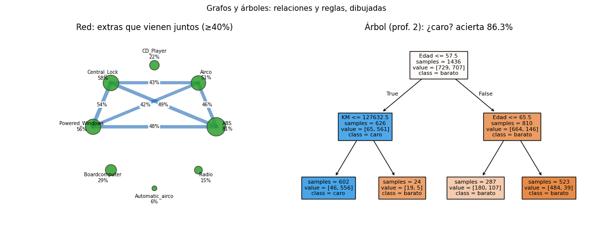

Anexo · Contenido extra · Lección 0013
Redes y árboles: equipamiento conectado
Win de hoy: dibujar la red de extras que vienen juntos (cierre+vidrios: 54 %) y un árbol de 2 preguntas que adivina caro/barato con 86 % de acierto.
1 · Grafos: nodos y aristas (¿qué viene con qué?)
Un grafo dibuja relaciones: nodos (los extras) unidos por aristas (co-ocurrencia). Reglas del dibujo: nodo grande = extra común (ABS en 81 %), arista gruesa = pack frecuente. Solo se dibujan pares que co-ocurren en ≥40 % de los autos, para que la red respire.
Lecturas: Central_Lock + Powered_Windows = 54 % (el pack confort: cierre y levanta-vidrios viajan
juntos) y ABS es el hub (conecta con todo porque casi todos lo traen). Esta red es la puerta visual a la
Bloque G: co-ocurrir 54 % es el “soporte” del algoritmo Apriori.
2 · Árboles: preguntas que separan (¿caro o barato?)
Un árbol de decisión
encadena preguntas sí/no hasta decidir. Con solo 2 niveles sobre Edad/KM/HP ya separa caro de barato
(corte en la mediana, 9.900 €) con 86,3 % de acierto en entrenamiento:
from sklearn.tree import DecisionTreeClassifier
y = (df["Price"] > df["Price"].median()).astype(int) # caro = 1
X3 = df[["KM", "Age_08_04", "HP"]]
t = DecisionTreeClassifier(max_depth=2, random_state=42).fit(X3, y)
# raíz: ¿Edad ≤ 57,5 meses? (los jóvenes van a la rama "caro")La raíz pregunta edad (≤ 57,5 meses): tiene sentido, es el gradiente de la 0006. Los árboles completos (poda, bosques, boosting) son Bloque E; hoy importa la idea visual: reglas legibles.
3 · Red vs árbol (y el primo dendrograma)
- Red: para relaciones simétricas (A viene con B). No hay dirección ni jerarquía.
- Árbol: para decisiones jerárquicas (primero edad, después KM). Se lee de arriba abajo.
- Dendrograma: primo del árbol que muestra agrupamientos por parecido; vuelve en el Bloque F con clustering jerárquico.
4 · Figura: la red de packs y el árbol stump

Regenerar la figura (mismo resultado versionado en assets/img/toyota/):
python scripts/make_figures.py --only redes-arboles-equipamiento5 · Quiz (auto-chequeo inmediato)
6 · Fuente primaria y cierre
Para profundizar (1 fuente): Géron, Hands-On Machine Learning — capítulo de árboles de decisión (O'Reilly, también en RESOURCES.md del curso).
¿Algo no quedó claro? Preguntame al agente: cómo leer una arista, por qué la raíz pregunta edad, o cuándo una red le gana a una tabla. Esa pregunta vale más que releer.